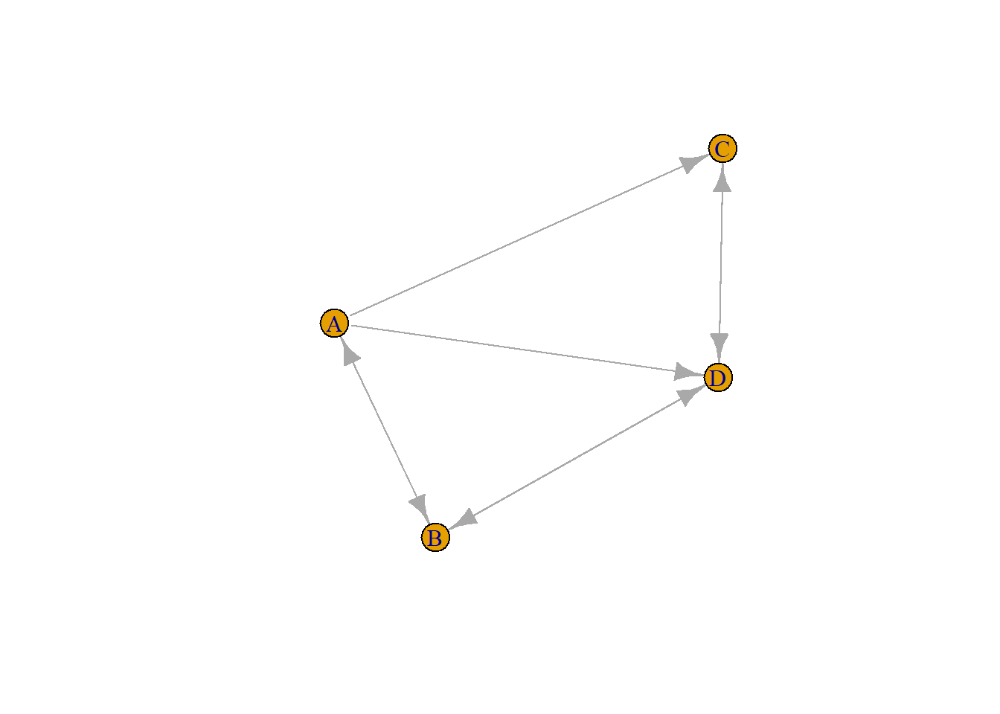

Chapter 4 Eigenvalues and Eigenvectors
The word eigen means characteristic. An eigenproblem is the problem of finding the characteristic properties.
We know that we can express linear transformations using matrices. These operations include scalings, rotations, and shears. For example, we may begin with a square (in black) centred at the origin then apply a transformation (a sheer) and change the shape (in blue).

Now, changing this shape essentially shifts points within the original square. However, some do not shift at all. Consider 3 vectors (red, yellow, green) in the original square.

We scale by a factor of 2 in the vertical direction and we get the following diagram.

We can see that the horizontal (green) vector remains unchanged. The direction of the vertical (red) vector remains the same but is doubled in length. The angle (direction) and size of the diagonal (yellow) vector have both changed. Since the horizontal and vertical vectors did not change direction, we refer to them as eigenvectors under this transformation. Since the horizontal vector did not change length, it has a corresponding eigenvalue. Since the vertical eigenvector doubled in size, it has an eigenvalue of 2. In essence, we apply a transformation to a space and look for vectors whose direction has not changed (eigenvectors) and then we measure the change in their length (eigenvalues).
As a second example, consider what happens when we take the same square and sheer it without changing the area. As you can see, only one of the example vectors is an eigenvector (the green) and it has an eigenvalue of 1.

A third example is a rotation. As you can imagine, a rotation that is not a multiple of 90 degrees will move every vector from its original angle and thus, there will be no eigenvectors.
4.1 Eigenvector Examples
We know that an eigenvector can be thought of as a vector having the same span both before and after a transformation and the eigenvalue is the amount by which the eigenvector is stretched due to the transformation. Here we highlight some special cases.
First, consider a uniform scaling in which we scale each direction by the same amount in each direction. In this case, every vector is an eigenvector.

Next, we consider a rotation of 180 degrees. Our three example vectors all have the same span but are simply pointed in different directions. This is the only rotation (below 360 degrees) that has some eigenvectors. Indeed, you can see that all vectors are eigenvectors with eigenvalue -1.
Finally, consider a case in which we combine a horizontal shear and a vertical scaling. In this case, our horizontal (green) vector is again an eigenvector (with eigenvalue 1) and a second eigenvector exists (in purple).
In machine learning, most of our data is \(n\) dimensional and so scaling and shearing become more complex. Moreover, when we move to higher dimensions, any eigenvector becomes an axis of rotation.
4.2 Calculating Eigenvectors
Consider a transformation \(A\). If this transformation has an eigenvector \(x\), we can say that \[Ax = \lambda x\] which simply means that after applying the transformation \(A\) to \(x\), the vector \(x\) remains on the same span (but possibly stretched by a factor of \(\lambda \in \mathbb{R}\)). We rewrite this as \[(A - \lambda I) x = 0,\] where \(I\) is the \(n \times n\) identity matrix. Now, either \(A - \lambda I = 0\) of \(x = 0\). The solution wherer \(x = 0\) is not interesting, so we want to know when \(A - \lambda I = 0\). We do so by finding the determinant. Thus, we want to find \[det(A - \lambda I) = 0.\]
Now, consider \(A = \begin{pmatrix} a & b\\c & d \end{pmatrix}\). Then \[det(A - \lambda I) = det\left(\begin{pmatrix} a & b\\c & d \end{pmatrix} - \begin{pmatrix} \lambda & 0\\0 & \lambda \end{pmatrix}\right) = det\begin{pmatrix} a - \lambda & b\\c & d - \lambda \end{pmatrix}.\] The determinant here is called the characteristic polynomial and is \[\lambda^2 - (a+d) \lambda + ad-bc = 0.\] Are eigenvalues are simply the solution to the characteristic polynomial and these can be used to find the eigenvectors.
As an example, we will apply a vertical scaling of 2 and find the eigenvalues and eigenvectors. Here, \(A = \begin{pmatrix}1 & 0 \\ 0 & 2 \end{pmatrix}\) and so our characteristic polynomial is \[\lambda^2 - 3 \lambda + 2 = (\lambda-1)(\lambda - 2) = 0.\] So, \(\lambda = 1,2\).
When \(\lambda = 1\), \((A - \lambda I)x = \begin{pmatrix} 0 & 0 \\ 0 & 1 \end{pmatrix}\begin{pmatrix}x_1 \\ x_2 \end{pmatrix}= \begin{pmatrix}0 \\ x_2 \end{pmatrix}= 0\). When \(\lambda = 2\), \((A - \lambda I)x = \begin{pmatrix} -1 & 0 \\ 0 & 0 \end{pmatrix}\begin{pmatrix}x_1 \\ x_2 \end{pmatrix}= \begin{pmatrix}-x_1 \\ 0 \end{pmatrix}= 0\). So, when our eigenvalue \(\lambda = 1\), we have an eigenvector in which \(x_2 = 0\). Thus, any vector with \(x_2 = 0\) is an eigenvector for this system. For example, any vector \(\begin{pmatrix} t \\ 0 \end{pmatrix}\). When our eigenvalue is \(\lambda = 2\), we have an eigenvector in which \(-x_1 = 0\). Thus, any vector with \(x_1 = 0\) is an eigenvector for the system such as \(\begin{pmatrix} 0 \\ t \end{pmatrix}\).
Consider a second example in which we rotate the system counterclockwise 90 degrees. Here \(A = \begin{pmatrix} 0 & -1\\ 1 & 0 \end{pmatrix}\). The characteristic polynomial in this case is \[\lambda^2 + 1 = 0.\] This polynomial equation has no real solutions and thus we conclude that there are no real eigenvalues (and hence no eigenvectors).
Normally, we will want to find eigenvalue/ eigenvectors by computer since most problems will require large dimensional matrices and finding the roots of complicated polynomials.
4.3 Changing the Eigenbasis
Here we combine the idea of eigenvectors with the concept of changing basis in a procedure called diagnolization which helps make matrix operations more efficient.
Consider a particle with initial location \(v_0 = \begin{pmatrix} 1/2 \\ 1 \end{pmatrix}\). The matrix \(T = \begin{pmatrix} 0.9 & 0.8 \\ -1 & 0.35 \end{pmatrix}\) represents the change in position of the particle after a single time step. Hence, \(v_1 = Tv_0\) represents the position of the particle after 1 step. After 2 time steps, we get \(v_2 = Tv_1 = T^2v_0\). After \(n\) steps, we get \(v_n = T^nv_0\).
A matrix which consists entirely of 0’s, except possibly on the main diagonal, the matrix is called a diagonal matrix. In the case of a diagonal matrix \(T = \begin{pmatrix} a & 0&0\\0&b&0\\0&0&c \end{pmatrix}\), we compute \(T^n = \begin{pmatrix} a^n & 0&0\\0&b^n&0\\0&0&c^n \end{pmatrix}\).
Let \(C\) be a matrix consisting of columns of eigenvectors and \(D\) the diagonal matrix with eigenvalues along the main diagonal. Then, \(T = CDC^{-1}\). However, we will note that \(T^2 = CDC^{-1}CDC^{-1} = CD^2C^{-1}\). In general, \(T^n = CD^nC^{-1}\). However, since \(D\) is diagonal, computing \(D^n\) is quite easy.
4.4 Eigenbasis Example
Here we examine the matrix \(T = \begin{pmatrix} 1 & 1 \\ 0 & 2 \end{pmatrix}\). This matrix performs a vertical stretch and a shear.
Now consider the vector \(\begin{pmatrix} -1 \\ 1 \end{pmatrix}\). Multiplying by \(T\), we get \(\begin{pmatrix} 1 & 1 \\ 0 & 2 \end{pmatrix}\begin{pmatrix} -1 \\ 1 \end{pmatrix} = \begin{pmatrix} 0 \\ 2 \end{pmatrix}\). If we multiply the result by \(T\) again, we get \(\begin{pmatrix} 1 & 1 \\ 0 & 2 \end{pmatrix}\begin{pmatrix} 0\\ 2 \end{pmatrix} = \begin{pmatrix} 2 \\ 4 \end{pmatrix}\). (You can check that this is the same as \(T^2 \begin{pmatrix} -1 \\ 1 \end{pmatrix}\)).
Notice that the eigenvalue and eigenvectors are \(v_1 = \begin{pmatrix} 1 \\ 0 \end{pmatrix}\), \(\lambda_1 = 1\), \(v_2 = \begin{pmatrix} 1 \\ 1 \end{pmatrix}\), \(\lambda_2 = 2\). So, we can do the same computation using the diagonalization method. Here \(C = \begin{pmatrix} 1 & 1 \\ 0 & 1 \end{pmatrix}\) and \(C^{-1} = \begin{pmatrix} 1 & -1 \\ 0 & 1 \end{pmatrix}\). Also, \(D = \begin{pmatrix} 1 & 0 \\ 0 & 2 \end{pmatrix}\). Thus, \[T^2 = CD^2C^{-1} = \begin{pmatrix} 1 & 1 \\ 0 & 1 \end{pmatrix}\begin{pmatrix} 1 & 0 \\ 0 & 2 \end{pmatrix}^2\begin{pmatrix} 1 & -1 \\ 0 & 4 \end{pmatrix} = \begin{pmatrix} 1 & 3 \\ 0 & 4 \end{pmatrix}.\] Therefore, we arrive at our answer \[\begin{pmatrix} 1 & 3 \\ 0 & 4 \end{pmatrix}\begin{pmatrix} -1 \\ 1 \end{pmatrix} = \begin{pmatrix} 2 \\ 4 \end{pmatrix}.\]
4.5 The PageRank Algorithm
The PageRank algorithm was published by and named after Google founder Larry Page and colleagues in 1998. Google uses it to decide the order of websites it displays after a search. The basic idea is that the importance of a website is related to the number of websites that link to it and from it.
Consider 4 websites and the extent to which each website contains a link to another website. We can visualize this as a graph.
## Warning: package 'igraph' was built under R version 4.2.2##
## Attaching package: 'igraph'## The following objects are masked from 'package:stats':
##
## decompose, spectrum## The following object is masked from 'package:base':
##
## union
We can write down the matrix that governs the links by displaying a 1 if the website given by the column links to the website in the given row. Hence we have \(\begin{pmatrix}0&1&0&0\\1&0&0&1\\1&0&0&1\\1&1&1&0 \end{pmatrix}\). Now, define \(L\) as the previous matrix; however, we divide each column vector by the number of links on the website. Hence \(L = \begin{pmatrix}0&1/2&0&0\\1/3&0&0&1/2\\1/3&0&0&1/2\\1/3&1/2&1&0 \end{pmatrix}\). This matrix \(L\) gives the probability of ending up on a page (by randomly), given that we are on a particular page.
To determine the rank of page \(A\), we need to know three things: (a) what is your rank, (b) do you link to page \(A\) and (c) how many outgoing links do you have on your page. Here, \(r_A = \sum_{j=1}^n L_{A,j}r_j\) since the rank of \(A\) is the sum of all of the probabilities that link to \(A\) times the ranks of those particular pages. In total, \(r = Lr\) because this is simply a matrix multiplication problem. If we initially assume that each rank is equal, then for 4 webpages, \(r_0 = \begin{pmatrix}1/4\\1/4\\1/4\\1/4 \end{pmatrix}\) and then we multiply by \(L\) repetedly, updating \(r\) each time, to find the asymptotic solution. Thus \(r_{i+1} = Lr_i = L^{i+1}r_0\). Eventually, \(r_{i+1} = Lr_{i}\) or \(r = Lr\). However, this means that \(r\) is an eigenvector of \(L\) with eigenvector 1. We simulate this to find (roughly) that \(r_{10} = \begin{pmatrix}0.12\\0.24\\0.24\\0.40 \end{pmatrix}\). Thus, website \(D\) is most important and would randomly be viewed 40% of the time. \(A\) is the least important and would be viewed randomly about 12% of the time. The important point here is that each website is ranked in terms of importance and thus are ranked in terms of how they should be displayed once they are searched for.